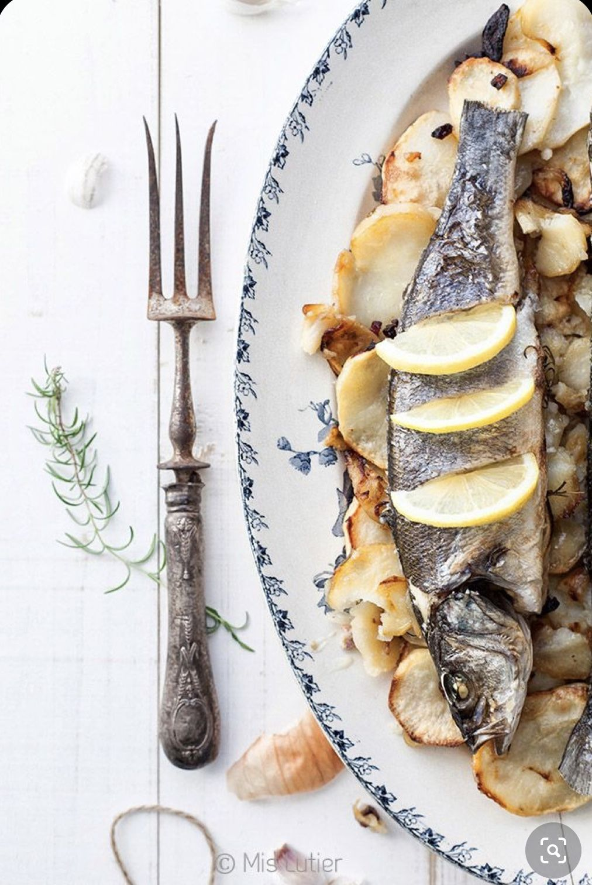
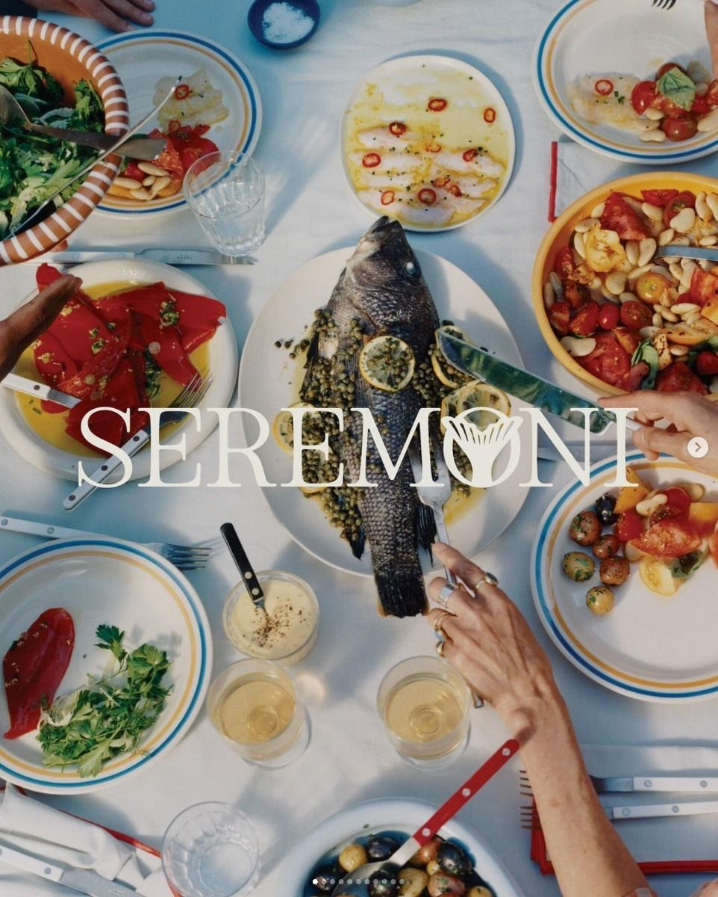
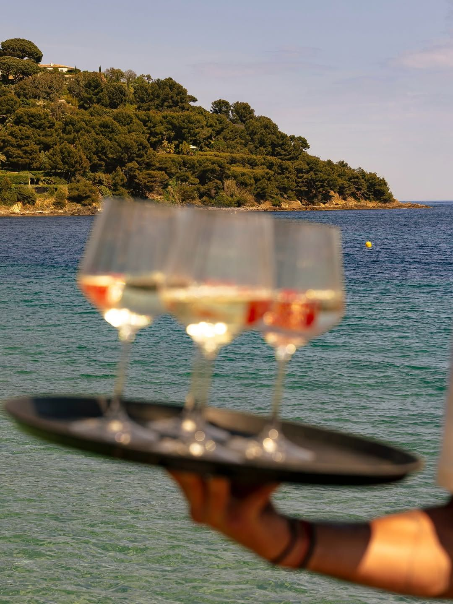
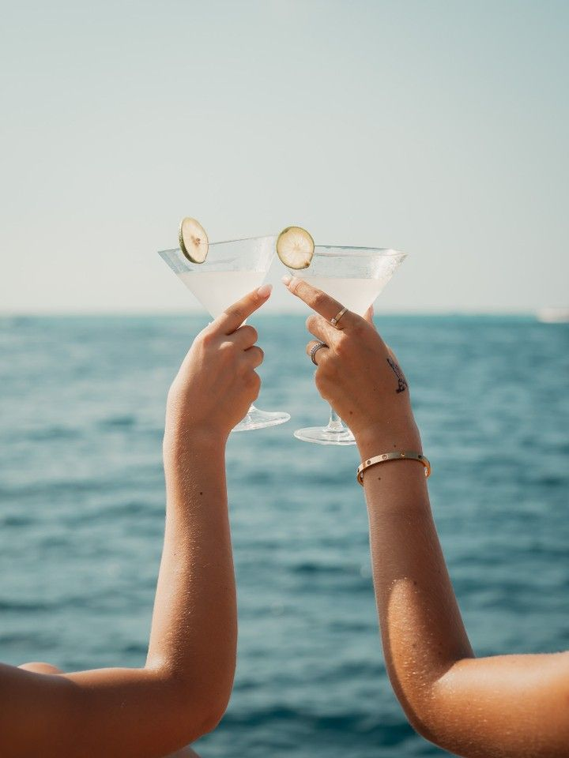
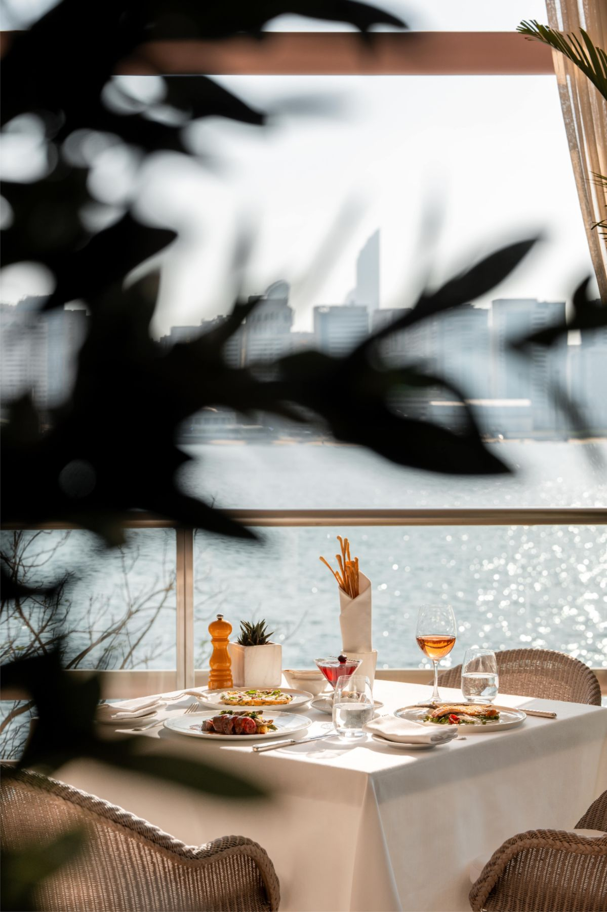

Instagram Tasarım Sistemi & Post Şablonları · Mayıs 2026
01 — Renk Sistemi
02 — Tipografi
03 — Marka Yaratıkları (mevcut varlıklar)

Balık
Ahtapot
Yengeç
Istakoz
Karides
Lacivert / gece zeminlerde %10–15 opaklık. Krem zeminlerde lacivert mürekkebe döndürmek için:
filter: brightness(0) saturate(100%) invert(12%) sepia(90%) saturate(600%) hue-rotate(200deg)
04 — Post Şablonları (1:1 · 1080×1080 · burada 540×540)

Porsiyon Fiyatı
480 ₺
Sea Bass
20 Mayıs · 2026
Menüde
bölgesel
Ege otları

Rock Orpine

Sea Beans
Blessed Thistle
Dikenli yapraklı Ege enginarı, haşlama
Wild Chicory
Ekşi sosla servis edilen acı ot

How to drink · Nasıl içilir
Önce rakıyı dök
Pour the raki first — about two fingers
Buz ekle
Add ice — turns cloudy (aslan sütü / lion's milk)
Bir parmak su
A splash of cold water — adjust to taste
Şerefe
Cheers — never without food and good company
Menüde Her Şey Görünür
05 — Post Şablon E: Sofra Anı (Polaroid · UGC / müşteri hikayesi)

Seyfi Balık · Yalıkavak
Menü sormazsınız, hesap sürpriz olmaz. Sadece sofra.
Feed'in her 3–4 postunda bir "sofra anı" polaroid gelir. Grafik postların arasında otantiklik kırar: bu yer gerçekten var ve güzel.
Müşteri fotoğrafları (UGC) bu şablona monte edilirse aynı çerçevede tutarlı kalır. Altta kısa caption: "Seyfi Balık · [müşteri adı]'nın masasından."
Hafif rotasyon (%2–3 degree), çift polaroid, bant şeritleri: fotoğraf arka planda kalır, grafik kimlik öne çıkar. Tüm Yalıkavak rakiplerinin yaptığı "fotoğraf + filtre" klişesinden ayrışır.
Reels cover frame olarak da kullanılabilir.
06 — Feed Grid Önizleme (9'lu ritim)
Levrek
480 ₺/kg · type-led
Şerefe
Photo overlay
Şeffaf
Fiyat
Flat · price-led
Polaroid · UGC
Çupra
520 ₺/kg
12:00 – 02:00
Her gün açık
Lakerda
Meyhane klasiği
Marina
2 dk
Konum · Location
A — Type-led (Salmon & Chèvre): Büyük isim, gerçek balık fotoğrafı, büyük fiyat.
B — Grid (Barkers Creek): Fotoğraf hücreleri + bilgi hücreleri. Ege otlarının görsel ve anlatı karması.
C — Overlay (Nibble Time): Fotoğraf %12 sızar, içerik öne. Sohbet + bilgi için.
D — Flat price: Rakibin yapamayanı. Fiyat görünür, sürpriz yok.
E — Polaroid: Otantiklik. Her 3–4 postta bir.
Her post = 1 mesaj. Asla daha fazla.
07 — Rekabetçi Farklılaşma
01
Yalıkavak Balıkçısı ve Eskiyer'in "scammer" etiketini yiyen açık: fiyat gizleme. Bu sistemde bakır renk yalnızca fiyatlara ayrılmış. Post D'de ve Post A'nın altında fiyat görsel hiyerarşinin zirvesidir.
02
@eskiyerrestaurant (28 K) dahil tüm rakipler düz fotoğrafa yaslanıyor. Gravür yaratıklar, polaroid çerçeveler ve tip-dominant düzen, feed'de anında tanınırlık sağlıyor; hiçbir Yalıkavak hesabı bu grafik dili kullanmıyor.
03
Muğla yabancı turistlerinin %34'ü İngiliz. Her şablonda Türkçe büyük, İngilizce bakır ve küçük. Rakip hesaplarda çift dilli caption yoktur; bu yapı yabancı turistlere organik ulaşır.